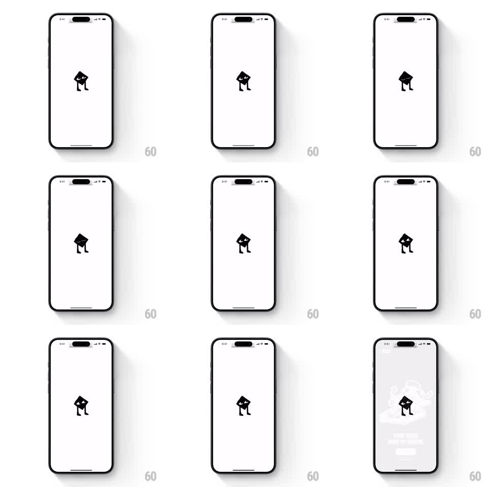

Media
Frame-by-frame

Rebuild this animation 1:1: Dice's splash - a black line-art dice mascot with legs stands centered on a white screen, blinking and shifting its weight in a subtle idle loop before the app fades in behind it.

Rebuild this animation 1:1: Dice's splash - a black line-art dice mascot with legs stands centered on a white screen, blinking and shifting its weight in a subtle idle loop before the app fades in behind it. ## Integration Integration: stack-agnostic spec - springs given as stiffness/damping, timed motions as duration + curve; map every value to your framework and animation library of choice. ## Scene White screen, status bar visible. Center: a small black mascot - a tilted die with two eyes and two thin legs. In the final frame the mascot stays while the app UI (event artwork, title, a button) fades in around it, the screen behind going light gray. ## Motion spec Pattern: idle mascot blink-and-shift loop. - The mascot stands still for ~2 seconds, then blinks: both eyes squash shut (scaleY 1 to 0.1, 100ms) and reopen (120ms). - Between blinks it shifts weight: a small rotation (+-3deg) with a tiny dip (translateY ~2px), alternating sides, ~1.5s cycle - a stand-still fidget, not a dance. - Occasionally it tilts its head further (~8deg) for a beat before returning. - Handoff: the white background crossfades to the app's light gray while UI elements fade in around the mascot (400ms); the mascot itself never moves during the handoff. ## Calibration - Restraint is the character: all movements are a few pixels or degrees. Anything bigger reads as hyperactive. - Blink both eyes together (this mascot blinks, unlike Arc's wink). ## Reduced motion Mascot is static; UI fades in after 800ms. ## Don't miss - The mascot is black on white, line-and-fill vector style - no color anywhere on the splash. - The mascot persists into the app frame; the splash hands off around it rather than replacing it.